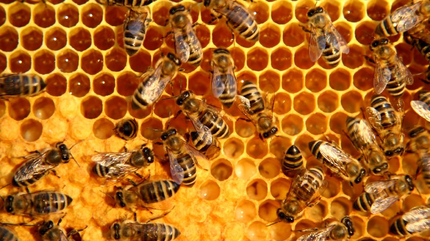

A spoonful for a cough: what the research says about honey
For generations, South Louisiana families have reached for the honey jar when a cough keeps the whole house up at night. It turns out that old habit has real research behind it.

What the studies found
A 2019 review in the Journal of Pediatric and Neonatal Individualized Medicine looked at six controlled trials covering 934 children with short-term coughs, mostly from colds and other upper-respiratory infections. Across those trials, honey consistently did better than no treatment, and it worked at least as well as the over-the-counter cough suppressants it was compared against — medicines like dextromethorphan and diphenhydramine.
That review isn't alone. The independent Cochrane Collaboration, which is known for its careful reviews of medical evidence, examined six trials with 899 children and concluded that honey given for up to three days probably relieves cough symptoms better than a placebo. A 2021 University of Oxford review widened the lens to include adults and children together. Pooling 14 studies, it found honey improved cold symptoms more than usual care, and it helped cough most of all.
Health authorities have taken notice. England's National Institute for Health and Care Excellence (NICE) lists honey as a self-care option for a short-term cough in anyone over one year old. The World Health Organization has also endorsed honey as a soothing remedy for coughs and sore throats.
Why might it help?
Researchers point to a few likely reasons:
- It coats and soothes. Thick, sweet honey coats an irritated throat, which can calm the tickle that sets off a cough.
- It has natural protective compounds. Honey carries antioxidants and has long been known for its antimicrobial properties.
- Sweetness gets saliva flowing. Some doctors think the extra saliva and mucus a sweet taste triggers helps lubricate the airway.
How honey was used in the research
Most studies were simple. Children got a single spoonful of honey about 30 minutes before bedtime, and parents rated the cough and everyone's sleep the next morning. In one widely cited U.S. study, the amount was matched to the dose on a cough-syrup label:
| Age | Amount used in the study |
|---|---|
| 2 to 5 years | ½ teaspoon |
| 6 to 11 years | 1 teaspoon |
| 12 years and up | 2 teaspoons |
Grown-ups can take it straight off the spoon or stir it into warm water or caffeine-free tea with a squeeze of lemon.
Important safety notes
- No honey for babies under 12 months — not even a taste. Honey can carry spores of the bacteria that cause infant botulism, a rare but serious illness. The CDC and the American Academy of Pediatrics both advise waiting until after the first birthday. That includes honey in food, formula, or on a pacifier.
- Keep it short. The research looked at a few nights of use. Because of the risk to teeth, the 2019 review suggests a short course. Brushing afterward is a good habit.
- Watch for side effects. In the studies, a small number of children were a little restless or had trouble falling asleep after honey.
- Know when to call the doctor. Get medical help if there's trouble breathing or wheezing, a high or lasting fever, if the person seems very sick, or if a cough hangs on longer than about three weeks.
The bottom line
Honey won't cure a cold, and most coughs from colds clear up on their own within a few weeks. But for a child (over age one) or an adult kept awake by a cough, a spoonful of honey is a simple, inexpensive comfort with good research behind it.
This article is for general information only. It isn't medical advice and isn't meant to diagnose or treat any illness. Talk with your doctor or pharmacist about any health concern, especially for young children or anyone with a chronic condition such as asthma or diabetes.
Sources
- Toorani MQ. The therapeutic role of honey for treating acute cough in the pediatric population: a systematic review. J Pediatr Neonat Individual Med. 2019;8(2):e080205. doi.org/10.7363/080205
- Oduwole O, et al. Honey for acute cough in children. Cochrane Database of Systematic Reviews 2018, Issue 4. doi.org/10.1002/14651858.CD007094.pub5
- Abuelgasim H, Albury C, Lee J. Effectiveness of honey for symptomatic relief in upper respiratory tract infections: a systematic review and meta-analysis. BMJ Evidence-Based Medicine 2021;26(2):57–64. doi.org/10.1136/bmjebm-2020-111336
- Paul IM, et al. Effect of honey, dextromethorphan, and no treatment on nocturnal cough and sleep quality for coughing children and their parents. Arch Pediatr Adolesc Med. 2007;161(12):1140–1146. doi.org/10.1001/archpedi.161.12.1140
- National Institute for Health and Care Excellence. Cough (acute): antimicrobial prescribing (NG120), 2019. nice.org.uk/guidance/ng120
- Centers for Disease Control and Prevention. Infant botulism. cdc.gov/botulism/infant-botulism.html
Keep a jar on hand
Raw, unaltered wildflower honey from Acadiana hives.